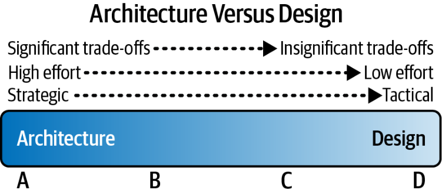
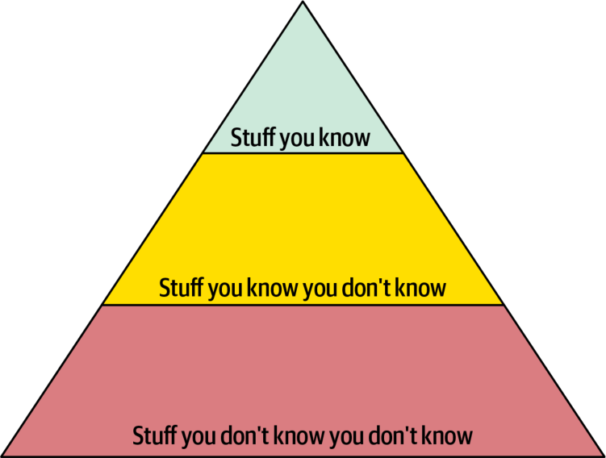
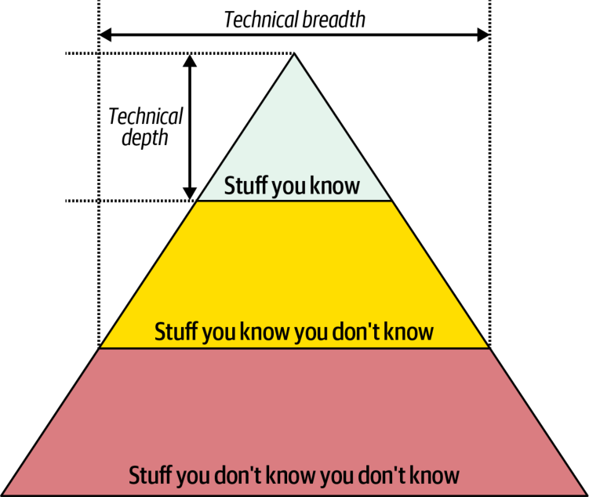
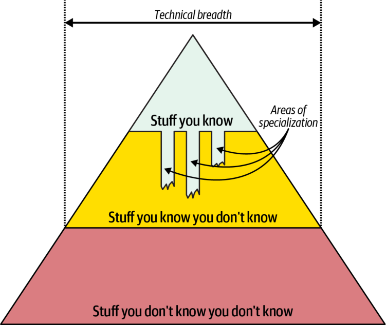
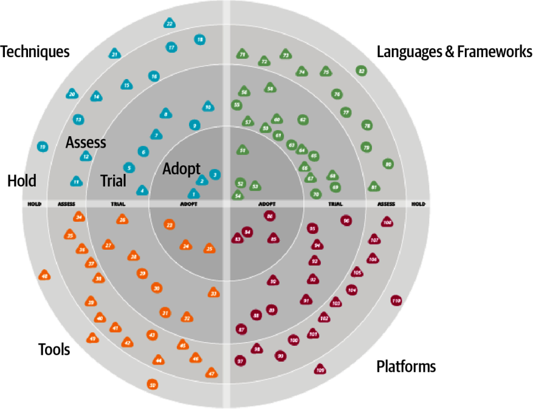
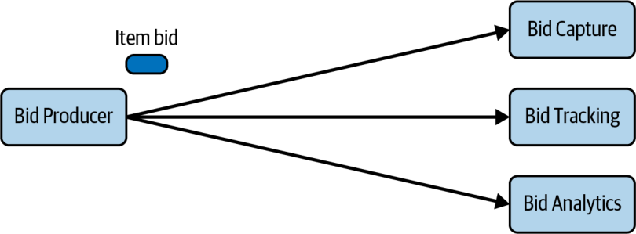
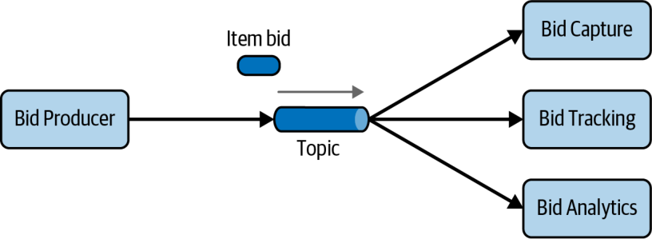
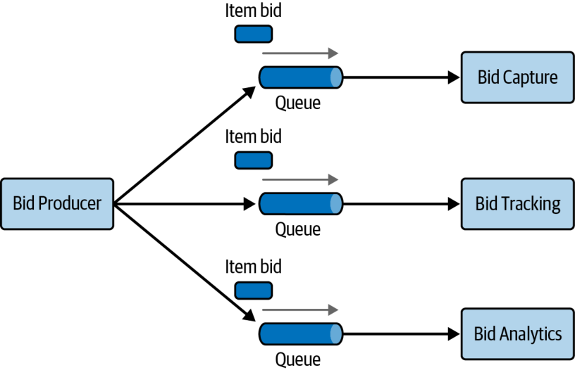

تفکر معماری یعنی دیدن چیزها با چشم یک معمار—به بیان دیگر، از دیدگاه معماری. درک اینکه یک تغییر خاص چگونه میتواند بر مقیاسپذیری کلی اثر بگذارد، توجه به نحوهٔ تعامل بخشهای گوناگون یک سیستم، و دانستن اینکه کدام کتابخانهها و چارچوبهای شخص ثالث برای موقعیتی معین مناسبترند، همه نمونههایی از تفکر معمارانهاند.
توانایی تفکر مثل یک معمار نخست مستلزم درک معماری نرمافزار و تفاوتهای میان معماری و طراحی است. سپس به داشتن دامنهٔ گستردهای از دانش نیاز دارد تا راهحلها و امکاناتی را ببینی که دیگران نمیبینند؛ تا محرکهای کسبوکار (Business Drivers) و اینکه چگونه به دغدغههای معماری میانجامند درک کنی؛ و تا مصالحههای میان راهحلها و فناوریهای گوناگون را بفهمی، تحلیل کنی و به تعادل برسانی.
در این فصل، این جنبههای تفکر مثل یک معمار را بررسی میکنیم.
معماری در برابر طراحی
لحظهای در ذهنتان خانهٔ رویاییتان را تصور کنید. چند طبقه دارد؟ سقفش مسطح است یا شیبدار؟ خانهای یکطبقه و پهناور است یا چندطبقه و معاصر؟ چند اتاق خواب دارد؟ همهٔ اینها ساختار کلی خانه را—به بیان دیگر، معماریاش—تعریف میکنند. حالا لحظهای داخل خانه را تصور کنید. کفپوش فرش دارد یا پارکت چوبی؟ دیوارها چه رنگیاند؟ آباژور کنار اتاق دارد یا چراغ از سقف آویزان است؟ همهٔ اینها به طراحی خانه مربوط میشوند.
به همین ترتیب، معماری نرمافزار کمتر دربارهٔ ظاهر سیستم و بیشتر دربارهٔ ساختارش است، در حالی که طراحی بیشتر دربارهٔ ظاهر سیستم و کمتر دربارهٔ ساختارش است. برای نمونه، انتخاب میکروسرویسها ساختار و شکل سیستم (یعنی معماریاش) را تعیین میکند، در حالی که ظاهر و حسِ صفحهٔ رابط کاربری (UI) طراحی سیستم را تعیین میکند.
اما تصمیماتی مانند اینکه یک سرویس را به بخشهای کوچکتر تقسیم کنیم یا چارچوبی برای رابط کاربری انتخاب کنیم چطور؟ متأسفانه، بیشتر تصمیمات از این دست، جایی روی طیف میان معماری و طراحی قرار میگیرند و همین تشخیص اینکه چه چیزی را باید معماری دانست دشوار میکند.
بهکارگیری معیارهای زیر کمک میکند تشخیص دهید چیزی بیشتر معماری است یا بیشتر طراحی:
بیشتر از جنس راهبرد است یا تاکتیکی؟
تغییر یا ساختنش به چه میزان تلاش نیاز دارد؟
مصالحههایش چقدر بااهمیتاند؟
این عوامل در شکل ۲-۱ نشان داده شدهاند؛ طیف میان معماری و طراحی را تصویر میکنند تا تعیین کنیم یک تصمیم کجا قرار میگیرد و مسئولیتش بر عهدهٔ کیست.

شکل ۲-۱. طیف میان معماری و طراحی
تصمیمات راهبردی در برابر تاکتیکی
هر تصمیم راهبردیتر باشد، معماریتر میشود. برعکس، هر تصمیم تاکتیکیتر باشد، احتمالاً بیشتر به طراحی مربوط میشود. تصمیمات راهبردی عموماً بلندمدتاند، در حالی که تصمیمات تاکتیکی عموماً کوتاهمدتاند و معمولاً مستقل از اقدامات یا تصمیمات دیگرند.
یک راه خوب برای تشخیص راهبردیبودن یا تاکتیکیبودن یک تصمیم، درنگرداشتن این پرسشهاست:
چقدر اندیشه و برنامهریزی در این تصمیم دخیل است؟
تصمیمی که چند دقیقه طول میکشد، احتمالاً تاکتیکی و در نتیجه بیشتر از جنس طراحی است، در حالی که تصمیمی که به هفتهها برنامهریزی نیاز دارد، احتمالاً راهبردیتر و در نتیجه بیشتر از جنس معماری است.
چند نفر در این تصمیم دخیلاند؟
تصمیمی که تنها یا با یک همکار گرفته میشود، احتمالاً تاکتیکیتر و در سمت طراحیِ طیف است، در حالی که تصمیمی که به جلسات زیاد با ذینفعان گوناگون نیاز دارد، احتمالاً راهبردیتر و در سمت معماریِ طیف است.
آیا این تصمیم یک چشمانداز بلندمدت است یا اقدامی کوتاهمدت؟
تصمیمی که احتمالاً بهزودی تغییر میکند، معمولاً از جنس تاکتیک است و بیشتر به طراحی مربوط میشود، در حالی که تصمیمی که بسیار دوام میآورد، معمولاً راهبردیتر و بیشتر از جنس معماری است.
هرچند این پرسشها کمی ذهنیاند، با این حال به تشخیص اینکه چیزی راهبردی است یا تاکتیکی—و در نتیجه بیشتر معماری یا بیشتر طراحی—کمک میکنند.
سطح تلاش
Martin Fowler در مقالهٔ معروفش «Who Needs an Architect?» مینویسد که معماری «چیزهایی است که تغییردادنشان دشوار است.» هر چه چیزی دشوارتر تغییر کند، عموماً به تلاش بیشتری نیاز دارد و آن تصمیم یا فعالیت را به سمت معماریِ طیف میبرد. برعکس، چیزی که برای پیادهسازی یا تغییر به حداقل تلاش نیاز دارد، در سمت طراحیِ طیف قرار میگیرد.
برای نمونه، جابهجایی از معماری لایهای تکپارچه (Monolithic) به میکروسرویسها به تلاش قابلتوجهی نیاز دارد و بنابراین بیشتر از جنس معماری است. مرتبکردن فیلدهای یک صفحه تلاش ناچیزی میخواهد و پس بیشتر از جنس طراحی است.
اهمیت مصالحهها
تحلیل مصالحههای یک تصمیم خاص، در تشخیص معماریبودن یا طراحیبودن آن بسیار کمک میکند. هر قدر مصالحهها بااهمیتتر باشند، تصمیم معمولاً معمارانهتر است. برای نمونه، انتخاب سبک معماری میکروسرویس مقیاسپذیری، چابکی، کشسانی (Elasticity) و تحمل خطا (Fault Tolerance) بهتری فراهم میکند. اما این معماری بسیار پیچیده است، بسیار پرهزینه، انسجام دادهاش ضعیف است و به خاطر کوپلینگ سرویسها (Service Coupling) کارایی خوبی ندارد. اینها مصالحههایی نسبتاً بااهمیتاند. میتوانیم نتیجه بگیریم که این تصمیم بیشتر در سمت معماریِ طیف است تا طراحی.
حتی تصمیمات طراحی هم مصالحه دارند. برای نمونه، تفکیک فایل کلاس، قابلیت نگهداری (Maintainability) و خوانایی (Readability) بهتری فراهم میکند—به بهای مدیریت کلاسهای بیشتر.
این مصالحهها چندان بااهمیت نیستند (بهویژه در مقایسه با مصالحههای میکروسرویسها)، بنابراین این تصمیم بیشتر در سمت طراحیِ طیف قرار میگیرد.
گستردگی فنی
برخلاف توسعهدهندگان که برای انجام کارشان به ژرفای فنی قابلتوجهی نیاز دارند، معماران نرمافزار باید گستردگی فنی قابلتوجهی داشته باشند تا چیزها را از دیدگاه معماری ببینند. ژرفای فنی یعنی داشتن دانش عمیق از زبان برنامهنویسی، پلتفرم، چارچوب، محصول و همینها خاص، در حالی که گستردگی فنی یعنی کمی از بسیاری چیزها دانستن.
برای درک بهتر این تفاوت، هرم دانش (Knowledge Pyramid) را در نظر بگیرید که در شکل ۲-۲ آمده است. این هرم تمام دانش فنی جهان را در خود جا میدهد و به سه سطح قابل تفکیک است: چیزهایی که میدانی، چیزهایی که میدانی نمیدانی، و چیزهایی که نمیدانی نمیدانی.

شکل ۲-۲. هرمی که تمام دانش را نمایندگی میکند
سطح «چیزهایی که میدانی» شامل فناوریها، چارچوبها، زبانها و ابزارهایی میشود که فناوریپردازان هر روز برای انجام کارشان به کار میبرند (مثلاً برنامهنویسی که زبان Java را میداند). آنها در همهٔ اینها خوب، یا حتی خبره، هستند. توجه کنید که این سطح از دانش (که بخش بالایی هرم را نمایندگی میکند) کوچکترین سطح و کممحتواترین آنهاست. دلیلش این است که بیشتر فناوریپردازان ناگزیرند حوزههایی را برای کسب تخصص انتخاب کنند—هیچکس نمیتواند در همهچیز خبره باشد.
سطح «چیزهایی که میدانی نمیدانی» (بخش میانی هرم) شامل چیزهایی میشود که فناوریپرداز کمی دربارهشان میداند یا نامشان را شنیده، اما تجربه یا تخصص اندکی در آنها دارد. برای نمونه، بیشتر فناوریپردازان نام Clojure را شنیدهاند و میدانند زبان برنامهنویسیای مبتنی بر Lisp است، اما نمیتوانند کد منبع به آن بنویسند. این سطح از دانش بسیار بزرگتر از سطح بالایی است؛ چون آدمها میتوانند با چیزهای بسیار بیشتری آشنا شوند، تا آنکه بتوانند در آنها تخصص پیدا کنند.
سطح «چیزهایی که نمیدانی نمیدانی» بزرگترین بخش هرم دانش است. شامل انبوه فناوریها، ابزارها، چارچوبها و زبانهایی میشود که—اگر فناوریپردازی که در حال حل مسئله است میدانست این راهحلها وجود دارند—راهحل کامل همان مسئله بودند. هدف در هر شغل فردی باید این باشد که چیزها را از «چیزهایی که نمیدانی نمیدانی» به بخش دوم هرم—«چیزهایی که میدانی نمیدانی»—منتقل کند و، هنگامی که تخصص لازم شد، از بخش میانی هرم به بالایی برساند: «چیزهایی که میدانی».
در آغاز کار یک توسعهدهنده، گسترش بخش بالایی هرم (شکل ۲-۳) یعنی کسب تخصص ارزشمند. اما چیزهایی که میدانی، همان چیزهایی است که باید مراقبشان باشی—در دنیای نرمافزار هیچچیز ایستا نیست. اگر توسعهدهندهای در Ruby on Rails خبره شود، اگر یک یا دو سال Ruby on Rails را نادیده بگیرد، این تخصص دوام نمیآورد. نگهداشتن چیزها در بالای هرم به سرمایهگذاری زمانی برای حفظ تخصص نیاز دارد. این بخش بالایی، ژرفای فنیِ فرد را نمایندگی میکند: چیزهایی را که واقعاً خوب میداند.
شکل ۲-۳. توسعهدهندگان باید تخصصشان را حفظ کنند تا از دستش ندهند
اما ماهیت دانش هنگام گذار توسعهدهندگان به نقش معمار تغییر میکند. بخش بزرگی از ارزش یک معمار این است که درک گستردهای از فناوری و چگونگی بهکارگیریاش برای حل مسائل خاص دارد. برای نمونه، بهتر است معمار بداند برای مسئلهای خاص پنج راهحل وجود دارد، تا آنکه فقط در یکی تخصص انحصاری داشته باشد. مهمترین بخشهای هرم برای معماران، بخشهای بالایی و میانیاند؛ هرقدر بخش میانی عمیقتر به بخش پایینی نفوذ کند، گستردگی فنی معمار را نشان میدهد، همانطور که در شکل ۲-۴ آمده است.

شکل ۲-۴. اینکه کسی دربارهٔ موضوعی چقدر میداند، ژرفای فنی است؛ و اینکه چند موضوع میداند، گستردگی فنی
برای معمار، گستردگی مهمتر از ژرفا است. چون معماران باید تصمیماتی بگیرند که توانمندیها را با قیدوشرطهای فنی همخوان کند، درک گسترده از طیف وسیعی از راهحلها ارزشمند است. بنابراین، مسیر خردمندانه برای یک معمار این است که از برخی تخصصهای سختبهدستآمده دست بکشد و آن زمان را صرف گسترش سبد دانشش کند، همانطور که در شکل ۲-۵ آمده است. برخی حوزههای تخصص باقی میمانند—احتمالاً حوزههای فناوریای که بهویژه دلپذیرند—و برخی دیگر سودمندانه زوال مییابند.

شکل ۲-۵. گستردگی افزایشیافته و ژرفای رو به کاهش برای نقش معمار
هرم دانش ما نشان میدهد نقش معمار و توسعهدهنده تا چه حد بنیادین با هم فرق دارند. توسعهدهندگان تمام عمرشان را صرف تیزکردن تخصص میکنند. گذار به نقش معمار یعنی جابهجایی در این دیدگاه، که بسیاری افراد آن را دشوار مییابند. این نیز به دو اختلال رایج میانجامد: نخست، معماری که میکوشد تخصصش را در طیف گستردهای از حوزهها حفظ کند، در هیچیک موفق نمیشود و در این مسیر خود را فرسوده میکند. دوم، اینکه تخصصش به شکل تخصص کهنشده (Stale Expertise) درمیآید—احساس غلطِ اینکه اطلاعات منسوخشدهات هنوز بهروز و پیشرو است. این وضعیت را اغلب در شرکتهای بزرگ میبینیم، جایی که توسعهدهندگان بنیانگذار شرکت به نقشهای رهبری رسیدهاند اما هنوز با معیارهای کهن برای تصمیمات فناوری عمل میکنند («ضدالگوی انسان یخزده» را در صفحهٔ ۲۴ ببینید).
ضدالگوی انسان یخزده
ضدالگو (Antipattern) چیزی است که برنامهنویس Andrew Koenig آن را اینگونه تعریف میکند: چیزی که هنگام شروع، ایدهٔ خوبی به نظر میرسد، اما شما را به دردسر میاندازد. ضدالگوی رفتاریِ شایعی که در میدان دیده میشود—ضدالگوی انسان یخزده (Frozen Caveman Antipattern)—توصیفگر معمارانی است که برای هر معماری به نگرانیِ غیرمنطقیِ همیشگیشان بازمیگردند. برای نمونه، یکی از همکاران Neal روی سیستمی کار میکرد که معماری متمرکزی داشت. هر بار که طراحی را برای معماران مشتری میفرستادند، این پرسش پیاپی مطرح میشد: «اما اگر ایتالیا را از دست بدهیم؟» چند سال قبل، مشکل غریبِ ارتباطی مانع از ارتباط دفتر مرکزی مشتری با فروشگاههایش در ایتالیا شده بود و آزاردهنده بود. هرچند احتمال تکرار آن بسیار اندک بود، معماران به این ویژگی خاصِ معماری وسواس پیدا کرده بودند.
بهطور کلی، این ضدالگو در معمارانی ظاهر میشود که در گذشته با تصمیم بد یا رویداد غیرمنتظرهای سوختهاند و همین، آنها را دربارهٔ هر چیز مرتبطی بهشدت محتاط کرده است. ارزیابی ریسک (Risk Assessment) مهم است، اما باید واقعبینانه هم باشد. درک تفاوت میان ریسک فنیِ واقعی و ادراکشده، بخشی از فرایند یادگیری مستمر است. تفکر مثل یک معمار مستلزم غلبه بر این ایدهها و تجربههای انسان یخزده، دیدن راهحلهای دیگر و پرسیدن پرسشهای مرتبطتر است.
معماران باید بر گستردگی فنی تمرکز کنند تا تیردان پرتری برای تیرانداختن داشته باشند. توسعهدهندگانی که به نقش معمار میرسند، ممکن است ناگزیر شوند شیوهٔ نگاهشان به کسب دانش را تغییر دهند. تعادل میان ژرفا و گستردگیِ سبد دانش (Portfolio of Knowledge)، چیزی است که هر توسعهدهندهای باید در طول حرفهاش در نظر بگیرد. اما معمار چگونه گستردگی فنی به دست میآورد؟ بخشهای بعدی چند تکنیک ارائه میدهند که به شما کمک میکند «چیزهایی را که نمیدانی نمیدانی» آشکار کنید.
قانون بیستدققهای
همانطور که در شکل ۲-۵ نشان داده شد، گستردگی فنی برای معماران مهمتر از ژرفای فنی است. اما چگونه میتوان همزمان با کار تماموقت، پیشرفت شغلی، وقتگذرانی با دوستان و رسیدگی به خانواده، با آخرین روندها و واژههای داغ (Buzzwords) بهروز ماند؟
یکی از تکنیکهایی که ما به کار میبریم، قانون بیستدققهای است. ایده این است که دستکم روزی ۲۰ دقیقه را صرف یادگیری چیزی تازه یا عمیقشدن در موضوعی خاص کنید. شکل ۲-۶ چند جای خوب برای گذراندن آن ۲۰ دقیقه را نشان میدهد، مثل InfoQ، DZone Refcardz و Thoughtworks Technology Radar. میتوانید با جستوجوی واژههای داغِ ناآشنا در اینترنت، دانششان را از «چیزهایی که نمیدانی نمیدانی» به «چیزهایی که میدانی نمیدانی» ارتقا دهید. حتی میتوانید آن وقت را صرف خواندن کتابی مثل همین کتاب کنید. نکته این است که در شلوغی روزتان زمانی را بکنید و بر توسعهٔ گستردگی فنی—و در نتیجه حرفهتان—تمرکز کنید.
شکل ۲-۶. قانون بیستدققهای
بسیاری از فناوریپردازان وقتی برای نخستین بار این مفهوم را میپذیرند، ۲۰ دقیقهشان را برای ناهار یا بعد از کار برنامهریزی میکنند؛ اما از تجربهٔ ما، این بازهها بهندرت جواب میدهند. آسان است که ناهار را بهجای استراحت، صرف رسیدن به کارهای عقبافتاده کنی، و شبها حتی بدترند: پس از یک روز طولانی، قرارهای اجتماعی، وقت خانواده و از اینها هم بیشتر در راهاند. در عوض، شدیداً توصیه میکنیم ۲۰ دقیقهتان را نخستِ صبح انجام دهید—درست پس از نوشیدن فنجانی قهوه یا چای و، مهمتر از همه، پیش از آنکه ایمیلتان را چک کنید. به محض اینکه ایمیل را چک کردید، صبحتان تمام شده و روزتان آغاز شده است. ۲۰ دقیقهتان را در حالی انجام دهید که ذهنتان تازه است و پیش از آنکه حواسپرتیها غلبه کنند.
پیروی از قانون بیستدققهای، گستردگی فنی شما را افزایش میدهد و به پرورش و حفظ دانشی کمک میکند که شما را به معمار مؤثرِ نرمافزار بدل میکند.
توسعهٔ رادار شخصی
در بیشتر دههٔ ۹۰ و آغاز دههٔ ۲۰۰۰، یکی از مؤلفان ما مدیر فناوری (CTO) شرکت کوچکی در حوزهٔ آموزش و مشاوره بود. هنگامی که او شروع کرد، پلتفرم اصلی Clipper بود؛ ابزاری برای توسعهٔ سریع برنامه (Rapid Application Development) که برنامههای DOS را روی فایلهای dBASE میساخت. تا اینکه یک روز ناپدید شد. شرکت ظهور Windows را دیده بود، اما بازار کسبوکار هنوز DOS بود… تا اینکه ناگهان نبود. یکی از همکاران زار میزد که نمیتوانند انبوه دانش بیفایدهٔ Clipper خود را با چیز دیگری جایگزین کنند. آن همکار با تعجب میپرسید: آیا در تاریخ گروهی بوده که اعضایش در طول عمر خود—بهعنوان توسعهدهندهٔ نرمافزار—به این اندازه دانش جزئی بیاموزند و دور بیفکنند؟ این تجربه تأثیری ماندگار بر جا گذاشت: پیشروی فناوری را نادیده بگیر، به زیان خودت.
این تجربه درس مهمی هم دربارهٔ حبابهای فناوری به ما آموخت. هنگامی که توسعهدهندگان، معماران و دیگر فناوریپردازان سرمایهگذاری سنگینی روی فناوری خاصی میکنند و کار و اندیشهشان را در آن میریزند، درون حبابی میمی (Memetic Bubble) زندگی میکنیم. درون این حباب—که همزمان اتاق پژواک (Echo Chamber) هم هست—همه به همان اندازهٔ ما آن فناوری را میشناسند و برایش اهمیت قائلاند. شاید اصلاً ارزیابیهای صادقانهٔ بیرون از حباب را نبینیم، بهویژه اگر اولِ امر خودِ فروشندهٔ فناوری این حباب را ساخته باشد. و هنگامی که حباب شروع به فروپاشی میکند، تا دیر شود خبری از هشدار نیست.
آنچه در حبمان کم داریم، یک رادار فناوری (Technology Radar) است: سندی زنده که به ما کمک میکند مخاطرات و پاداشهای فناوریهای موجود و نوظهور را بسنجیم. مفهوم رادار از Thoughtworks میآید، جایی که Neal هم عضو هیئتمدیره است و هم معمار نرمافزار. در این بخش، توصیف میکنیم این مفهوم چگونه شکل گرفت و سپس نشان میدهیم چگونه رادار شخصی بسازید.
رادار فناوری Thoughtworks
هیئت مشاورهٔ فناوری (Technology Advisory Board) یا TAB، گروهی از رهبران ارشد فناوری در Thoughtworks است که به CTO در گرفتن تصمیمات دربارهٔ جهتگیریها و راهبردهای فناوریِ شرکت و مشتریانش کمک میکند. برای بهروزماندن، این گروه شروع به تولید چیزی کرد که اکنون رادار فناوریِ دوبار در سال است.
این کار عوارض جانبی غیرمنتظرهای داشت. هنگامی که Neal در کنفرانسها سخن میراند، حاضران دنبالش میگشتند تا از کمکش در تولید رادار تشکر کنند و غالباً اضافه میکردند که شرکت خودشان هم نسخهٔ خودش را تولید کرده است. Neal همچنین دریافت که این، پاسخ پرسشی است که در پنلهای سخنرانان کنفرانسها مدام مطرح میشود: «چطور با فناوری همگام میمانید؟ چطور میفهمید دنبال چه چیزی بروید؟» پاسخ، البته، این است که همهٔ این سخنرانان نوعی رادار داخلی دارند.
اجزاء (Parts). رادار Thoughtworks از چهار ربع تشکیل شده است که میکوشند بیشتر چشمانداز توسعهٔ نرمافزار را پوشش دهند:
Tools — همهچیز، از ابزارهای توسعه مثل IDEها تا ابزارهای یکپارچهسازی در حدِّ سازمانی
Languages and frameworks — زبانهای کامپیوتری، کتابخانهها و چارچوبها، معمولاً متنباز
Techniques — هر رویهای که به توسعهٔ نرمافزار بهطور کلی کمک کند، از جمله فرایندها، شیوههای مهندسی و توصیهها
Platforms — سکوهای فناوری، از جمله پایگاهدادهها، ارائهدهندگان ابری و سیستمعاملها
حلقهها (Rings). رادار چهار حلقه دارد که در اینجا از بیرون به داخل فهرست شدهاند:
Hold — معنای اصلی حلقهٔ Hold این بود «فعلاً دست نگه دارید»؛ نمایندهٔ فناوریهایی که هنوز برای ارزیابی منصفانه تازه بودند—فناوریهایی با سروصدای زیاد اما هنوز اثباتنشده. حلقهٔ Hold تکامل یافته و اکنون چیزی شبیه «با این فناوری هیچ کار جدیدی را شروع نکنید» نشان میدهد. استفاده از آن در پروژههای موجود آسیبی ندارد، اما برای توسعهٔ جدید دو بار فکر کنید.
Assess — نشان میدهد فناوریای ارزش کاوش دارد (مثلاً از طریق اسپایکهای توسعه (Development Spikes)، پروژههای تحقیقاتی یا نشستهای کنفرانسی) تا ببینید چگونه بر سازمان اثر میگذارد. برای نمونه، هنگامی که مرورگرهای موبایل برجسته شدند، بسیاری از شرکتهای بزرگ آشکارا هنگام تدوین راهبرد موبایل این مرحله را پشت سر گذاشتند.
Trial — برای فناوریهایی که ارزش پیگیری دارند. اگر توانمندیای در این حلقه است، درک چگونگی ساخت آن مهم است. حالا زمان آزمایش پروژهای کمریسک است.
Adopt — Thoughtworks بهشدت معتقد است صنعت باید موارد فهرستشده در حلقهٔ Adopt را بپذیرد.
در نمای نمونهٔ رادار در شکل ۲-۷، هر نقطه (Blip) فناوری یا تکنیک متفاوتی را نمایندگی میکند. Thoughtworks از رادار برای انتشار نظرات جمعیاش دربارهٔ دنیای نرمافزار بهره میبرد؛ بسیاری از توسعهدهندگان و معماران نیز از آن بهعنوان شیوهای برای ساختاردادن به فرایند ارزیابی فناوریشان و سازماندهی اندیشهشان دربارهٔ اینکه وقت را صرف چه چیزی کنند استفاده میکنند. برای کاربرد شخصی، پیشنهاد میکنیم معانی ربعها را به شکل زیر تغییر دهید:
Hold — این حلقه فقط فناوریها و تکنیکهایی را در بر نمیگیرد که باید از آنها پرهیز کنید، بلکه عادتهایی را هم که میخواهید ترک کنید. برای نمونه، اگر معماری از دنیای .NET هستید، شاید عادت داشته باشید آخرین اخبار و شایعات را در انجمنها دربارهٔ مسائل داخلیِ تیم بخوانید. این کار سرگرمکننده است، اما میتواند جریان اطلاعاتی کمارزشی باشد. قراردادنش در حلقهٔ Hold یادآوریای است از اینکه از چه چیزی باید پرهیز کنید.
Assess — حلقهٔ Assess را برای فناوریهای امیدوارکنندهای به کار ببرید که چیزهای خوبی دربارهشان شنیدهاید اما هنوز فرصت نکردهاید خودتان ارزیابیاش کنید. این حلقه، منطقهٔ تجمعی برای پژوهشهای جدیتر آینده میسازد.
Trial — حلقهٔ Trial نشاندهندهٔ پژوهش و توسعهٔ فعال است، مثل انجام آزمایشهای اسپایک درون پایگاه کد بزرگتری (Code Base). اینها فناوریهاییاند که ارزش صرفکردن وقت برای درک عمیقترشان را دارند تا بتوانید آنها را بهشکل مؤثر در تحلیل مصالحهها بگنجانید.
Adopt — حلقهٔ Adopt شخصیِ شما، چیزهای تازهای را نمایندگی میکند که بیشتر از همه هیجانزدهتان میکنند، و بهترین شیوهها را برای حل مسائل خاص.

شکل ۲-۷. نمونهای از رادار فناوری Thoughtworks
بیشتر فناوریپردازان فناوریها را بیشوبهاندازه بهصورت اتفاقی انتخاب میکنند، بر اساس اینکه چه چیزی خوشقیافه است یا کارفرمایانشان از چه چیزی استفاده میکنند—اما داشتن موضعی از سرِ رهاکردن (Laissez-faire) نسبت به سبد فناوریتان برای حرفهتان خطرناک است. ساختن رادار فناوری به شما کمک میکند اندیشهتان دربارهٔ فناوری را رسمیت ببخشید و معیارهای متضاد تصمیمگیری را به تعادل برسانید. (برای نمونه، شاید گرفتن شغل جدیدی با تمرکز بر فناوریِ «خنکتر» دشوارتر باشد، در حالی که فناوری بالغتر ممکن است بازار کار بزرگی داشته باشد اما کارهای جالبتری عرضه نکند.)
با سبد فناوریتان مثل یک سبد مالی برخورد کنید: متنوعسازی کنید! برخی فناوریها و/یا مهارتهایی را که تقاضای گسترده دارند انتخاب کنید و آن تقاضا را دنبال کنید. اما شاید هم بخواهید چند شرطبندی فناوری (Technology Gambits) را هم امتحان کنید، مثل هوش مصنوعی مولد یا دستگاههای اینترنت اشیای تعبیهشده (Embedded IoT). حکایتها فراواناند از توسعهدهندگانی که خود را از بندِ سکونشینیِ پشت میزکار رها کردند، با کارکردن تا دیروقت روی پروژههای متنبازی که محبوب شدند و سرانجام قابل خرید. این، دلیلی دیگر است بر تمرکز بر گستردگی بهجای ژرفا.
ساختن رادار شخصی اسکفولد خوبی برای گسترش سبد فناوریتان فراهم میکند—اما در نهایت، خودِ تمرین مهمتر از نتیجه است. ساختن این مصورسازی بهانهای به شما میدهد تا در برنامهٔ شلوغتان زمانی بکنید و به این چیزها فکر کنید؛ غالباً همین تنها راه انجامدادن این نوع تفکر است.
هرچند مهمترین بخش ساختن رادار شخصی، گفتوگوهایی است که به راه میاندازد، اما مصورسازیهای بسیار مفیدی هم تولید میکند. پس از استقبال فراوانِ فناوریپردازانی که رادارهای خودشان را میساختند، Thoughtworks ابزاری به نام Build Your Own Radar منتشر کرد. با یک صفحهٔ گستردهٔ Google بهعنوان ورودی، مصورسازی راداری تولید میکند که رادار شخصی شما را نشان میدهد. از همهٔ فناوریپردازان دعوت میکنیم از آن بهره ببرند.
تحلیل مصالحهها
تفکر مثل یک معمار یعنی دیدن مصالحهها در هر راهحلی—فنی یا غیرفنی—و تحلیل آن مصالحهها برای تعیین بهترین راهحل. دلیل اینکه این فعالیت، یکی از فعالیتهای کلیدی یک معمار است (و بنابراین بخشی از تفکر معماری) را میتوان با نقلقول زیر از Mark (یکی از مؤلفان ما) نشان داد:
معماری همان چیزی است که نه میتوانی در گوگل پیدایش کنی و نه از یک LLM بپرسی.
همهچیز در معماری یک مصالحه است؛ به همین دلیل است که پاسخ معروف به هر پرسش معماری در جهان این است: «بستگی دارد.» این پاسخ شاید آزاردهنده باشد، اما متأسفانه درست است. نمیتوانید پاسخ را در گوگل بجویید یا از موتور هوش مصنوعی یا مدل زبانی بزرگ (LLM) بپرسید که REST برای سیستمتان بهتر است یا پیامرسانی، یا اینکه میکروسرویسها سبک معماری درستی برای محصول جدیدتان هستند، چون پاسخ واقعاً بستگی دارد. بستگی دارد به محیط استقرار، محرکهای کسبوکار، فرهنگ شرکت، بودجهها، چارچوبهای زمانی، مهارتهای توسعهدهندگان و دهها عامل دیگر. محیط، وضعیت و مسئلهٔ هر کسی متفاوت است. به همین دلیل است که معماری اینقدر دشوار است. با نقلقول Neal، مؤلف دیگر ما:
در معماری پاسخ درست یا غلط وجود ندارد—فقط مصالحه.
برای نمونه، سیستم مزایدهٔ کالا (شکل ۲-۸) را در نظر بگیرید که در آن پیشنهاددهندگان آنلاین روی کالاهای مزایدهشده قیمت پیشنهاد میدهند. سرویس Bid Producer یک پیشنهاد (Bid) را از پیشنهاددهنده میسازد و سپس مبلغ آن را برای سرویسهای Bid Capture، Bid Tracking و Bid Analytics میفرستد.

شکل ۲-۸. نمونهٔ مصالحه در سیستم مزایده—صفها یا موضوعها؟
برای رفتار ناهمزمان در این سیستم، معمار میتواند از صفها (Queue) به شیوهٔ پیامرسانی نقطهبهنقطه (Point-to-Point) استفاده کند، یا از موضوع (Topic) به شیوهٔ پیامرسانی انتشار-اشتراک (Publish-and-Subscribe). کدام را باید انتخاب کند؟ نمیتواند پاسخ را گوگل کند. تفکر معماری ایجاب میکند مصالحههای هر گزینه را تحلیل کند و با توجه به موقعیت خاص، بهترین (یا کمبدترین) گزینه را برگزیند.
دو گزینهٔ پیامرسانی برای سیستم مزایدهٔ کالا در شکل ۲-۹ نشان داده شدهاند که استفاده از موضوعها را در مدل پیامرسانی انتشار-اشتراک تصویر میکند، و شکل ۲-۱۰ که استفاده از صفها را در مدل پیامرسانی نقطهبهنقطه نشان میدهد.

شکل ۲-۹. استفاده از موضوع برای ارتباط میان سرویسها

شکل ۲-۱۰. استفاده از صفها برای ارتباط میان سرویسها
مزیت روشن (و راهحل آشکار)ِ این مسئله در شکل ۲-۹، گسترشپذیری معماری است. سرویس Bid Producer فقط به یک اتصال به موضوع نیاز دارد. آن را با راهحل صف در شکل ۲-۱۰ مقایسه کنید که در آن Bid Producer باید به سه صف مختلف متصل شود. اگر سرویس جدیدی به نام Bid History به این سیستم افزوده شود (تا به هر پیشنهاددهنده، تاریخچهٔ همهٔ پیشنهادهایش را نشان دهد)، هیچ تغییری در سرویسهای موجود یا زیرساخت لازم نیست. سرویس جدید Bid History میتواند صرفاً مشترک همان موضوعی شود که اطلاعات پیشنهاد را در خود دارد.
اما با گزینهٔ صف در شکل ۲-۱۰، سرویس Bid History به صف جدیدی نیاز دارد و Bid Producer باید برای افزودن اتصالی اضافی به صف جدید اصلاح شود. نکته اینجاست که استفاده از صفها یعنی افزودن قابلیت جدیدِ پیشنهاددادن به تغییرات قابلتوجهی در سرویسها و زیرساخت نیاز دارد، در حالی که با رویکرد موضوع، هیچ تغییری در زیرساخت موجود لازم نیست. همچنین، Bid Producer در گزینهٔ موضوع کوپلینگ کمتری دارد، جایی که نمیداند اطلاعات پیشنهاد چگونه و توسط کدام سرویسها به کار خواهد رفت. در گزینهٔ صف، Bid Producer دقیقاً میداند اطلاعات پیشنهاد چگونه (و توسط چه کسی) به کار میرود و بنابراین کوپلینگ بیشتری با سیستم دارد.
تا اینجا، این تحلیل مصالحهها آشکار میسازد که رویکرد موضوع با مدل انتشار-اشتراک، انتخاب آشکار و بهتر است. اما با نقلقول Rich Hickey، خالق زبان برنامهنویسی Clojure:
برنامهنویسان مزایای همهچیز را میدانند و مصالحههای هیچچیز را نه. معماران باید هر دو را درک کنند.
تفکر معمارانه یعنی نهتنها به مزایای راهحل خاصی نگریستن، بلکه تحلیل جنبههای منفیِ مرتبط—یا همان مصالحهها—نیز هست. ادامهٔ مثال سیستم مزایده، معمار نرمافزار منفیهای راهحل موضوع را همچون مثبتهایش تحلیل میکند. در شکل ۲-۹ میبینید که با موضوع، هر کسی میتواند به دادههای پیشنهاد دسترسی داشته باشد که مسئلهٔ احتمالیِ دسترسی به داده و امنیت داده را پیش میآورد. اما در مدل صفِ شکل ۲-۱۰، دادهای که به صف فرستاده میشود فقط توسط مصرفکنندهٔ خاصی که آن پیام را دریافت میکند قابل دسترسی است. اگر سرویس مزاحمی (Rogue Service) در صفی شنود میکرد، سرویس مربوط آن پیشنهادها را دریافت نمیکرد و بلافاصله اعلانی دربارهٔ ازدسترفتن داده (و نفوذ احتمالی امنیتی) ارسال میشد. به بیان دیگر، شنودِ یک موضوع بسیار آسان است، اما شنودِ صف نه.
علاوه بر مسئلهٔ امنیت، راهحل موضوع در شکل ۲-۹ فقط از قراردادهای همگون (Homogeneous) پشتیبانی میکند. همهٔ سرویسهایی که دادههای پیشنهاد را دریافت میکنند باید همان قرارداد داده و مجموعهٔ دادهٔ پیشنهاد را بپذیرند. در گزینهٔ صف، هر مصرفکننده میتواند قرارداد خودش را داشته باشد، متناسب با دادهای که لازم دارد. برای نمونه، فرض کنید سرویس جدید Bid History قیمت فعلی درخواستی را همراه با پیشنهاد میخواهد، اما هیچ سرویس دیگری به آن اطلاعات نیاز ندارد. در این حالت باید قرارداد اصلاح شود که بر همهٔ سرویسهای دیگرِ استفادهکننده از آن داده اثر میگذارد. در مدل صف، این یک کانال مجزا و در نتیجه قراردادی مجزاست که بر هیچ سرویس دیگری اثر نمیگذارد.
عیب دیگر مدل موضوع این است که از پایش تعداد پیامها در موضوع پشتیبانی نمیکند و بنابراین نمیتواند قابلیت مقیاسپذیری خودکار (Autoscaling) را پشتیبانی کند. اما با گزینهٔ صف، هر صف را میتوان جداگانه پایش کرد و توازنبار برنامهپذیر (Programmatic Load Balancing) را روی هر مصرفکنندهٔ پیشنهاد اعمال کرد تا هر کدام بتوانند مستقلاً و بهطور خودکار مقیاس بگیرند. توجه کنید این مصالحه، وابسته به فناوری است: پروتکل پیامرسانی پیشرفتهٔ پیام (Advanced Message Queuing Protocol) یا AMQP، به لطف جدایش میان یک مبادلهگر (Exchange) —چیزی که تولیدکننده به آن میفرستد— و یک صف —چیزی که مصرفکننده به آن گوش میسپارد— میتواند از توازنبار برنامهپذیر و پایش پشتیبانی کند.
با این تحلیل کاملترِ مصالحهها، کدام گزینه بهتر است؟
بستگی دارد! جدول ۲-۱ این مصالحهها را خلاصه میکند.
جدول ۲-۱. مصالحههای موضوعها
مزایای موضوع
معایب موضوع
گسترشپذیری معماری
نگرانیهای دسترسی به داده و امنیت داده
جداسازی سرویسها
نبود قراردادهای ناهمگون
—
نبود پایش و مقیاسپذیری برنامهپذیر
دوباره، همهچیز در معماری نرمافزار مصالحه دارد: مزایا و معایب. تفکر مثل یک معمار یعنی تحلیل این مصالحهها، سپس پرسیدن پرسشهایی مثل: «کدام مهمتر است: گسترشپذیری یا امنیت؟» انتخاب یک معمار همیشه به محرکهای کسبوکار، محیط و انبوه عوامل دیگر بستگی دارد.
درک محرکهای کسبوکار
تفکر مثل یک معمار همچنین یعنی درک محرکهای کسبوکاری که برای موفقیت سیستم لازماند و ترجمهٔ آن الزامات به ویژگیهای معماری مثل مقیاسپذیری، کارایی و در دسترسبودن. این کاری دشوار است و نیاز دارد معمار، دانشی در حوزهٔ کسبوکار و روابطی سالم و مشارکتی با ذینفعان کلیدی کسبوکار داشته باشد. ما چهار فصل از کتاب را به همین موضوع اختصاص دادهایم: در فصل ۴، ویژگیهای معماری گوناگون را تعریف میکنیم. در فصل ۵، شیوههای شناسایی و کیفیسازی ویژگیهای معماری را شرح میدهیم. در فصل ۶، توصیف میکنیم چگونه هر ویژگی را اندازه بگیریم تا مطمئن شویم نیازهای کسبوکارِ سیستم برآورده میشود. و سرانجام، در فصل ۷ دامنهٔ ویژگیهای معماری و ارتباطشان با کوپلینگ را بررسی میکنیم.
توازن میان معماری و کدنویسی مستقیم
یکی از کارهای دشواری که یک معمار با آن روبهروست، یافتن توازن میان کدنویسی مستقیم (Hands-On Coding) و معماری نرمافزار است. ما با اطمینان باور داریم که هر معماری باید کدنویسی کند و باید سطح معینی از ژرفای فنی را حفظ کند (بخش «گستردگی فنی» را در صفحهٔ ۲۰ ببینید). با اینکه این کار ساده به نظر میرسد، انجامدادنش گاهی دشوار است.
نخستین توصیهٔ ما به هر کسی که میکوشد میان کدنویسی مستقیم و معمار بودن توازن برقرار کند، پرهیز از تلهٔ گلوگاه (Bottleneck Trap) است. ضدالگوی تلهٔ گلوگاه زمانی رخ میدهد که معمار مالکیت کدِ مسیر بحرانی (Critical Path) یک سیستم را —معمولاً کدِ چارچوبِ زیرین یا بخشهای دشوارتر— بر عهده میگیرد و برای تیم به گلوگاهی بدل میشود. دلیلش این است که معمار توسعهدهندهٔ تماموقت نیست و بنابراین باید میان کار توسعه —مثل نوشتن و آزمودن کد منبع— و نقش معماری —رسم نمودارها، شرکت در جلسات، و خب، شرکت در جلساتِ بیشتر— توازن بدهد.
یک راه برای پرهیز از تلهٔ گلوگاه این است که معمار بخشهای حیاتی سیستم را به دیگران در تیم توسعه واگذار کند و خودش روی کدنویسی تکهای کوچک از کارکرد کسبوکار —مثل یک سرویس یا صفحهٔ رابط کاربری— متمرکز شود، تکهای که یک تا سه تکرار (Iteration) بعدتر اجرا خواهد شد. این کار سه اثر مثبت دارد. نخست، معمار با نوشتن کد تولیدی (Production Code) تجربهٔ عملی به دست میآورد و در عین حال گلوگاه تیم نمیشود. دوم، کدِ مسیر بحرانی و کدِ چارچوب در تیم توسعه —که جای اصلیشان همانجاست— توزیع میشود و این به تیم مالکیت و درک بهتری از بخشهای دشوار سیستم میدهد. سوم، و شاید مهمتر از همه، معمار دقیقاً همان کدِ منبعِ مرتبط با کسبوکاری را مینویسد که تیم توسعه مینویسد. این کار به او کمک میکند با دردهای تیم توسعه دربارهٔ فرایندها، روشها و محیط توسعه بهتر همدلی کند —و امیدواریم برای بهبود آنها نیز دست به کار شود.
حال فرض کنیم معمار نتواند با تیم توسعه کد بنویسد. چگونه میتواند همچنان دستبهکد بماند و سطحی از ژرفای فنی را حفظ کند؟ چند توصیه و تکنیک برای معمارانی که میخواهند به تعمیق تواناییهای فنیشان ادامه دهند:
اثباتهای مفهوم مکرر
انجام پیاپیِ اثبات مفهومها (POC) از معمار میخواهد کد منبع بنویسد؛ همچنین این کار به راستیآزمایی یک تصمیم معماری با درنظرگرفتن جزئیات پیادهسازی کمک میکند. برای نمونه، فرض کنید معماری بر سر انتخاب میان دو راهحل کشگذاری گیر کرده است. یک راه مؤثر برای تصمیمگیری این است که در هر دو محصولِ کش یک نمونهٔ کارآمد پیادهسازی کنید و نتایج را مقایسه کنید. این کار به معمار اجازه میدهد جزئیات پیادهسازی و میزان تلاش لازم برای ساخت راهحل کامل را از نزدیک ببیند. همچنین میتواند ویژگیهای معماریِ راهحلهای مختلف کش —مثل مقیاسپذیری، کارایی و در کل تحمل خطا— را بهتر مقایسه کند.
هر جا ممکن بود، معمار باید بهترین کدِ تولیدیای را که از دستش برمیآید بنویسد. این تمرین را به دو دلیل توصیه میکنیم. نخست، کدِ اثبات مفهومِ «یکبارمصرف» (Throwaway Code) در بسیاری اوقات راهش را به مخزن کد منبع (Source Code Repository) باز میکند و به معماری مرجع (Reference Architecture) یا نمونهای راهنما برای دیگران بدل میشود. هیچ معماری دوست ندارد کدِ شلختهٔ یکبارمصرفش را نمایندهٔ کیفیت معمول کارش بدانند. دوم، نوشتن کدِ اثبات مفهومِ باکیفیتِ تولیدی یعنی تمرین نوشتن کدِ باکیفیت و خوشساخت، بهجای آنکه مدام با ساختن POCهای سریع و شلخته، عادات بدِ کدنویسی را در خود پرورش دهد.
پرداختن به بدهی فنی
راه دیگری برای دستبهکد ماندن، دستزدن به بخشی از بدهی فنی (Technical Debt) است؛ با این کار تیم توسعه آزاد میشود تا روی داستانهای کاربری (User Stories) حیاتیِ کارکردی کار کند. بدهی فنی معمولاً اولویت پایینی دارد، پس اگر معمار فرصت نکند وظیفهٔ مرتبط با بدهی فنی را در یک تکرارِ مشخص تمام کند، دنیا به آخر نمیرسد و این کار در کل بر موفقیت آن تکرار اثر نمیگذارد.
رفع اشکالها
به همین ترتیب، کار روی رفع اشکالها (Bug Fixes) درونِ یک تکرار، راه دیگری برای حفظ مهارتهای کدنویسی مستقیم است که همزمان به تیم توسعه کمک میکند. این تکنیک هرچند اصلاً جلوهٔ درخشانی ندارد، به معمار اجازه میدهد مشکلات و ضعفهای درونِ پایگاه کد —و شاید خودِ معماری— را شناسایی کند.
خودکارسازی
بهرهگیری از خودکارسازی (Automation) با ساختن ابزارهای سادهٔ خط فرمان (Command-Line Tools) و تحلیلگرها برای کمک به کارهای روزمرهٔ تیم توسعه، راه عالی دیگری برای حفظ مهارتهای کدنویسی مستقیم است که همزمان تیم توسعه را کارآمدتر میکند. کارهای تکراریای را که تیم توسعه انجام میدهد پیدا کنید و خودکارشان کنید؛ از خودکارسازی سپاسگزار خواهند بود. چند نمونه: اعتبارسنجهای خودکارِ کد منبع برای بررسی استانداردهای مشخصِ کدنویسی که در آزمونهای lint دیگر پیدا نمیشوند، چکلیستهای خودکار، و وظایف تکراریِ بازآرایی کد (Code Refactoring) بهصورت دستی.
خودکارسازی به شکل تحلیل معماری و توابع برازش خودکار، برای تضمین سرزندگی و انطباق معماری، راه عالی دیگری برای دستبهکد ماندن است. برای نمونه، معمار میتواند با نوشتن کد Java در ArchUnit روی پلتفرم Java، انطباق معماری را خودکار کند، یا توابع برازشِ سفارشیای بنویسد که هم انطباق معماری را تضمین کند و هم تجربهٔ عملی به دست آورد. دربارهٔ این تکنیکها در فصل ۶ صحبت میکنیم.
بازبینی کد
آخرین تکنیک برای دستبهکد ماندن بهعنوان معمار، انجام پیاپی بازبینی کد (Code Reviews) است. معمار هرچند عملاً کد نمینویسد، دستکم این کار او را درگیرِ کد منبع نگه میدارد. فایدههای دیگر بازبینی کد عبارتاند از تضمینِ انطباق با معماری و شناسایی فرصتهای مربیگری و راهنمایی در تیم.
چیزهای بیشتری در تفکر معماری هست
این فصل بنیانهای آغازِ اندیشیدن مثل یک معمار را شکل میدهد. با این حال، اندیشیدن مثل یک معمار بسیار فراتر از آن چیزی است که در این فصل آمد. اندیشیدن مثل یک معمار یعنی درکِ ساختار کلیِ یک سیستم (این موضوع را در فصل ۳ دنبال میکنیم)، درکِ دغدغههای کسبوکار و ترجمهٔ آن دغدغهها به ویژگیهای معماری (چهار فصل به همین موضوع اختصاص داریم)، و سرانجام، دیدن سیستم از راه مؤلفههای منطقیاش —بلوکهای سازندهٔ یک سیستم— (این موضوع را در فصل ۸ بررسی میکنیم).